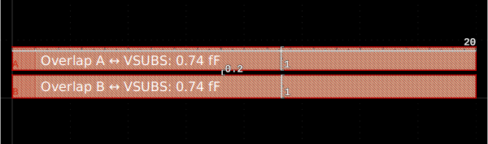
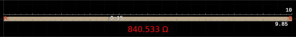

KLayout-PEX Documentation
1 Introduction
1.1 Motivation
In Electronic Design and Automation (EDA) for Integrated Circuits (ICs), a schematic presents an abstraction in comparison to the layout that will eventually be taped-out and fabricated by the semiconductor foundry.
While in the schematic, a connection between device terminals is seen as an equipotential, the stacked geometries in a specific layout introduce parasitic effects, which can be thought of additional resistors, capacitors (and inductors), not modeled by and missing in the original schematic.
To be able to simulate these effects, a parasitic extraction tool (PEX) is used, to extract a netlist from the layout, which represents the original schematic (created from the layout active and passive elements) augmented with the additional parasitic devices.
1.2 Acknowledgements
Special thanks to the public funded German project FMD-QNC (16ME0831) https://www.elektronikforschung.de/projekte/fmd-qnc for financial support to this work.
1.3 About KLayout-PEX
KLayout is an open source VLSI layout viewer and editor.
KLayout-PEX (short KPEX) is a PEX tool, well integrated with KLayout by using its API.
There are multiple PEX engines supported, currently:
- FasterCap integration (field solver engine)
- MAGIC integration (wrapper calling
magic) - Analytical 2.5D engine (parasitic concepts and formulas of MAGIC, implemented using KLayout methods)
Tip
KPEX tool source code itself is made publicly available on GitHub (follow this link) and shared under the GPL-3.0 license.
KPEX documentation source code is made publicly available on GitHub (follow this link) and shared under the Apache-2.0 license.
Please feel free to create issues and/or submit pull requests on GitHub to fix errors and omissions!
The production of the tool and this document would be impossible without these (and many more) great open-source software products: KLayout, FasterCap, MAGIC, protobuf, Quarto, Python, ngspice, Numpy, Scipy, Matplotlib, Git, Docker, Ubuntu, Linux…
1.4 Status
Caution
Currently, KPEX is developed as a Python prototype, using the KLayout Python API. This allows for a faster development cycle during the current prototyping phase.
Eventually, critical parts will be re-implemented (in C++, and parallelized), to improve performance. As we’re already using the KLayout API (which is pretty similar between Python, Ruby and C++), this will be relatively straight-forward.
Warning
Please keep in mind that this software is early stage, and not yet intended for production use.
| Engine | PEX Type | Status | Description |
|---|---|---|---|
KPEX/MAGIC |
CC, RC |
Usable | Wrapper engine, using installed magic tool |
KPEX/FasterCap |
CC |
Usable, pending QA | Field solver engine using FasterCap |
KPEX/FastHenry2 |
R, L |
Planned | Field solver engine using FastHenry2 |
KPEX/2.5D |
CC |
Under construction | Prototype engine implementing MAGIC concepts/formulas with KLayout means |
KPEX/2.5D |
R, RC |
Planned | Prototype engine implementing MAGIC concepts/formulas with KLayout means |
1.5 Installation
Generally, KPEX is deployed using PyPi (Python Package Index), install via:
pip3 install --upgrade klayout-pex
kpex --version # check the installed version
kpex --help # this will help with command line argumentsAs for the dependencies, there are multiple options available.
1.5.1 Option 1: Using IIC-OSIC-TOOLS Docker Image
We provide a comprehensive, low entry barrier Docker image that comes pre-installed with most relevant open source ASIC tools, as well as the open PDKs. This is a pre-compiled Docker image which allows to do circuit design on a virtual machine on virtually any type of computing equipment (personal PC, Raspberry Pi, cloud server) on various operating systems (Windows, macOS, Linux).
For further information please look at the Docker Hub page and for detailed instructions at the IIC-OSIC-TOOLS GitHub page.
Linux
In this document, we assume that users have a basic knowledge of Linux and how to operate it using the terminal (shell). If you are not yet familiar with Linux (which is basically a must when doing integrated circuit design as many tools are only available on Linux), then please check out a Linux introductory course or tutorial online, there are many resources available.
A summary of important Linux shell commands is provided in IIC-JKU Linux Cheatsheet.
1.5.2 Option 2: Standalone Installation
- KLayout layout tool:
- is mandatory for all engines (besides the MAGIC-wrapper)
- get the latest pre-built package version
- or follow the build instructions
- FasterCap engine:
- optional, required to run the FasterCap engine
- either compile your own version from the GitHub repository
- or use precompiled versions available at https://github.com/martinjankoehler/FasterCap/releases
- MAGIC-wrapper engine:
- optional, required to run the MAGIC-wrapper engine
- Follow the installation instructions at the GitHub repository
- Skywater sky130A PDK:
- optional, for now, KPEX technology specific files are deployed within the
klayout-pexPython package pip3 install --upgrade volare(install PDK package manager)volare ls-remote(retrieve available PDK releases- for example
PRE-RELEASE 0c1df35fd535299ea1ef74d1e9e15dedaeb34c32 (2024.12.11))
- for example
volare enable 0c1df35fd535299ea1ef74d1e9e15dedaeb34c32(install a PDK version)- PDK files now have been installed under
$HOME/.volare/sky130A
- optional, for now, KPEX technology specific files are deployed within the
- IHP SG13G2 PDK:
- optional, for now, KPEX technology specific files are deployed within the
klayout-pexPython package git clone https://github.com/IHP-GmbH/IHP-Open-PDK(install PDK package manager)
- optional, for now, KPEX technology specific files are deployed within the
1.5.3 Useful tools: meshlab
For previewing generated 3D geometries, representing the input to FasterCap, we recommend installing MeshLab. The generated STL-files are located at output/<design>/Geometries/*.stl.
2 First Steps
- The command line tool
kpexis used to trigger the parasitic extraction flow from the terminal. - Get help calling
kpex --help.
2.1 Example Layouts
Example layouts are included in the testdata/designs subdirectory of the KLayout-PEX source code:
2.2 Running the KPEX/FasterCap engine
Preconditions:
klayout-pexwas installed, see Section 1.5FasterCapwas installed, see Section 1.5
Note
Normally, devices with SPICE (Nagel 1975) simulation models (e.g. like MOM-capacitors1 in the sky130A PDK) are ignored (“blackboxed”) during parasitic extraction.
kpex has an option --blacklist n to allow extraction of those devices (whiteboxing), which can be useful during development (during the prototype phase, whiteboxing is actually the default setting, so please use --blacklist y to explicitly configure blackboxing).
Let’s try the following:
kpex --pdk sky130A --blackbox n --gds \
testdata/designs/sky130A/*/cap_vpp_04p4x04p6_l1m1m2_noshield.gds.gz
Note
This will report an error that we have not activated one or more engines, and list the available engines:
| Argument | Description |
|---|---|
--fastercap |
Run kpex/FasterCap engine |
--2.5D |
Run kpex/2.5D engine |
--magic |
Run MAGIC engine |
Now, to run the FasterCap engine (might take a couple of minutes):
kpex --pdk sky130A --blackbox n --fastercap --gds \
testdata/designs/sky130A/*/cap_vpp_04p4x04p6_l1m1m2_noshield.gds.gzWithin the output directory (defaults to output), KPEX creates a subdirectory Geometries, containing STL-files that provide a preview of the FasterCap input geometries. Use MeshLab (see Section 1.5.3) to open and preview those files:
Tip
- Open the
*.stlfiles inMeshLab - Use the eye buttons to hide and show each file/mesh
- Use the align tool (“A” in the toolbar) to assign different colors
- Start by showing only on the conductors (files named
cond_*.stl) - Then try showing different dielectrics (files named
diel_*.stl), to see how they surround the conductors.

In the log file, we see the output of FasterCap including the Maxwell capacitance matrix:
Capacitance matrix is:
Dimension 3 x 3
g1_VSUBS 5.2959e-09 -4.46971e-10 -1.67304e-09
g2_C1 -5.56106e-10 1.5383e-08 -1.47213e-08
g3_C0 -1.69838e-09 -1.48846e-08 1.64502e-08KPEX interprets this matrix and prints a CSV netlist, which can be pasted into a spreadsheet application:
Device;Net1;Net2;Capacitance [fF]
Cext_0_1;VSUBS;C1;0.5
Cext_0_2;VSUBS;C0;1.69
Cext_1_2;C1;C0;14.8
Cext_1_1;C1;VSUBS;0.08In addition, a SPICE netlist is generated.
2.3 Running the KPEX/MAGIC engine
Preconditions:
klayout-pexwas installed, see Section 1.5magicwas installed, see Section 1.5
The magic section of kpex --help describes the arguments and their defaults. Important arguments:
--magicrc: specify location of themagicrcfile--gds: path to the GDS input layout--magic: enable magic engine
3 Supporting new PDKs
For every supported PDK2, a KPEX technology definition is required, as well as customized PEX-“LVS” scripts.
3.1 Customized PEX-“LVS” scripts
KLayout has built-in support for Layout-Versus-Schematic (LVS) scripts, based on its Ruby API. Customized “LVS” scripts are (“ab”)used in KPEX, not with the intent of comparing Layout-Versus-Schematic, but rather to extract the connectivity/net information for all polygons across multiple layers. The resulting net information is stored in a KLayout LVS Database (“LVSDB”) within the run directory.

KPEX Net FormationThese customized “LVS” scripts are stored in:
- Skywater sky130A:
pdk/sky130A/libs.tech/kpex/sky130.lvs - IHP SG13G2:
pdk/ihp_sg13gs/libs.tech/kpex/sg13g2.lvs
What’s specific about this customization:
- Layers names must be assigned, using KLayout’s
(name(layer, name))function - MOM3 capacitors, MIM4 capacitors and resistors should be extracted to separate layers, to enable blackboxing / whiteboxing.
The layer names in the script must correspond with the names configured in the tech JSON file.
3.2 Technology Definition Files
The KPEX technology definition format uses Google Protocol Buffers, so there is:
- formal schema files, defining the structure and data types involved
protos/tech.proto: main schema / entry point, includes the othersprotos/process_stack.proto: describes details of the process stack, such as dielectrics and heights of layersprotos/process_parasitics.proto: parasitic tables, used to parametrize the 2.5D engine
- multiple concrete instantiations, that adhere to this schema (called messages in the
protobuflingo)- in the form of JSON files
- Skywater 130A:
klayout_pex_protobuf/sky130A_tech.pb.json - IHP SG13G2:
klayout_pex_protobuf/ihp_sg13g2_tech.pb.json
3.2.1 JSON tech files for supported PDKs
3.2.2 Process Stackup Definition
For 3D solvers, like the KPEX/FasterCap engine, 3D information about the dimensions (e.g. z-offset and thickness) of metal layers is required, as well as the dielectrics in-between.
The Skywater sky130A process includes more intricate types of dielectrics (e.g., compared to IHP sg13g2), therefore I’ll use this PDK as an example here.
sky130A Process Stackup (Source: (Authors 2020))
We can derive the following data from Figure 1:
- Metal layers \(= \{\text{poly}, \text{li}, \text{metal1}, \text{metal2}, \text{metal3}, \text{metal4}, \text{metal5}, \text{capm}, \text{cap2m} \}\)
- thickness
- z-offset (relative to substrate)
- Contact layers \(= \{\text{licon}\}\)
- Via layers \(= \{\text{mcon}, \text{via1}, \text{via2}, \text{via3}, \text{via4}\}\)
- Dielectrics
- dielectric constant \(k\), the relative permittivity of the dielectric material
- Different types:
- Sidewall dielectrics \(= \{\text{IOX}, \text{SPNIT}, \text{NILD3\_C}, \text{NILD4\_C}\}\)
- width of the sidewall around metals
- height above metal
- Conformal dielectrics \(= \{\text{LINT}, \text{TOPNIT}, \text{capild}\}\)
- thickness above metal
- thickness where no metal
- thickness of the sidewall
- Simple dielectrics \(= \{\text{PSG}, \text{NILD2}, \text{NILD3}, \text{NILD4}, \text{NILD5}, \text{NILD6}\}\)
- embracing everything between 2 layers, including the sidewall and conformal dielectrics
- Sidewall dielectrics \(= \{\text{IOX}, \text{SPNIT}, \text{NILD3\_C}, \text{NILD4\_C}\}\)
An except of the process_stack.proto schema is shown in the code listing below, note:
- Line 3:
ProcessStackInfo.LayerTypeis an enumeration type for the possible types of layers in the process stack - Line 57:
ProcessStackInfo.layersis a list ofLayerInfo- the order of this list defines the orders of layers
- Line 40:
MetalLayerdescribes a metal layer - Line 43:
MetalLayer.contact_abovepoints to the via connecting to the metal layer above (omitted for the top metal layer) - Line 30, 37:
ConformalDielectricLayer.referenceandSidewallDielectricLayer.reference- these refer to a dielectric or metal layer that they wrap around
ConformalDielectricLayerandConformalDielectricLayercan be wrapped, e.g.SPNITwrapsIOX, which wrapspoly
message ProcessStackInfo {
enum LayerType { …
LAYER_TYPE_SIMPLE_DIELECTRIC = 50;
LAYER_TYPE_CONFORMAL_DIELECTRIC = 60;
LAYER_TYPE_SIDEWALL_DIELECTRIC = 70;
LAYER_TYPE_METAL = 80;
}
message Contact { // Contact/Via
string name = 1;
string metal_above = 10;
double thickness = 20;
double width = 30;
double spacing = 31;
double border = 32;
}
…
message SimpleDielectricLayer { // Simple dielectric
double dielectric_k = 10;
string reference = 30;
}
message ConformalDielectricLayer { // Conformal dielectric
double dielectric_k = 10;
double thickness_over_metal = 20;
double thickness_where_no_metal = 21;
double thickness_sidewall = 22;
string reference = 30;
}
message SidewallDielectricLayer { // Sidewall dielectric
double dielectric_k = 10;
double height_above_metal = 20; // might be 0 if none
double width_outside_sidewall = 21;
string reference = 30;
}
message MetalLayer { // Metal
double z = 1; // z-offset in µm (of layer bottom), above substrate
double thickness = 2; // thickness in µm
Contact contact_above = 40;
}
message LayerInfo {
string name = 1;
LayerType layer_type = 2;
oneof parameters { …
SimpleDielectricLayer simple_dielectric_layer = 12;
ConformalDielectricLayer conformal_dielectric_layer = 13;
SidewallDielectricLayer sidewall_dielectric_layer = 14;
MetalLayer metal_layer = 15;
}
}
repeated LayerInfo layers = 100;
}4 KPEX/FasterCap Engine
FasterCap is a 3D and 2D parallel capacitance field solver, inspired by FastCap2. https://www.fastfieldsolvers.com/fastercap.htm
Starting from an input layout (e.g. GDS file) and a process stack-up (part of the Section 3.2), KPEX creates input geometries for FasterCap. After running FasterCap, the Maxwell capacitance matrix is parsed and interpreted to obtain the parasitic capacitances.
See Section 2.2 to get started with a first extraction example.

KPEX/FasterCap Engine4.1 3D Input Geometries

FasterCap 3D Input: File System OverviewThe FasterCap input files and their format is documented in (Di Lorenzo 2019), a PDF version of the Windows-specific *.chm file is available at https://github.com/martinjankoehler/FasterCap/tree/master/doc/pdf.
KPEX generates 3D input geometries:
*.lstfile: Main input file- defines dielectric instances
- defines conductor instances
- each instance refers to a
*.geofile
*.geofiles: Defines single geometry- defines shapes (e.g. triangles)
- Each shape has a reference point to define inside/outsides

FasterCap 3D Input: File Format4.2 Example: MOM Capacitor
MeshLab 3D PreviewFigure 2 depicts the MOM capacitor example of a from Section 2.2).
The corresponding schematic representation of Figure 3 contains 3 conductors (\(N_1\), \(N_2\) and \(N_3\)), and coupling capacitances:
- Capacitances between conductors: \(C_{ij} \text{ where } i \ne j\)
- \(C_{23}\) is the capacitance “intended” by the MOM designer
- Capacitances between conductors and ground: \(C_{ii}\)
4.3 Output Maxwell Capacitance Matrix
A Maxwell capacitance matrix (Maxwell 1873) provides the relation between voltages on a set of conductors and the charges on these conductors, as described by the FasterCap author in the white paper (Di Lorenzo 2023).
FasterCap log output prints the Maxwell capacitance matrix (one for each iteration/refinement).

FasterCap Log Output: Maxwell Capacitance Matrix- Matrix Properties:
- Scaling: units have to be divided by \(10^{-6}\)
- rows and columns are the same (list of net names)
- Row Cells:
- off diagonals cells contains the coupling between row/col nets (times \(-1\))
- diagonal cells contains the sum of the absolute values of all other cells in the row
- Matrix Symmetry:
- in theory (ideal world), the matrix would be symmetric
- in practice it’s not
- therefore
FastCap2did average the off-diagonals FasterCapdoes not average, so it’s done as part ofKPEX
FasterCap Maxwell Capacitance Matrix: Interpretation5 KPEX/MAGIC Engine
This engine is merely just a wrapper around magic, which prepares a TCL script that opens the layout file and starts MAGIC’s PEX flow. See Section 2.3 to get started with a first extraction example.
The following chapter will illustrate concepts of the parasitic extraction done in MAGIC, also motivated by the fact that the engine in Section 6 will be based on those. Major parts of this illustration, the figures and concepts are based on work done by MAGIC maintainer Tim Edwards, especially his talk from FSiC conference 2022 (Edwards 2022) and a (conceptual follow-up) ChipsAlliance meeting on April 4, 2023, see (Edwards 2023b) and (Edwards 2023a). In addition, code review and debugging of the MAGIC codebase was performed.
5.1 MAGIC database units
- To convert between MAGIC database units and \(\mu m\), a scaling factor \(\alpha\) is used, so that \(L_{\mu m} = \frac{L_{dbu}}{\alpha}\)
- E.g. for
sky130A, \(\alpha = 200.0\)
5.2 Types of Parasitic Capacitances
MAGIC models multiple types of capacitances:
- Substrate Overlap: Overlap area of a metal with the substrate
- Substrate Fringing: Sidewall of a metal fringes out to substrate
- Sidewall Capacitance: Coupling between adjacent sidewalls on the same layer
- Overlap Capacitance: Overlap on different metal layers
- Fringe Capacitance (“Side Overlap”): Sidewall of a metal fringes out other metal layers
5.3 Substrate Capacitance
Overlapping area: \[ C_{area} = \frac{\epsilon_{si} * K}{d} * \text{area} \,\,\,\,\,\,\, \left[ \frac{F}{\mu m^2} * \mu m^2\right] \]
Fringe (“Perimeter”): \[ C_{fringe\,to\,substrate} = \text{perimeter} * C_{perim} = (2l + 2w)*C_{perim} \]
Coefficients like \(C_{perim}\) are part of the tech files (Parasitic Tables)
5.4 Sidewall Capacitance

\[ C_{sidewall} = \frac{\epsilon_{si} * K}{s} * \text{sidewall area} \,\,\,\,\,\,\, \left[ \frac{F}{\mu m^2} * \mu m^2\right] \] \[ \,\,\,\,\,\,\,\,\,\,= \frac{\epsilon_{si} * K}{s} * t * l \,\,\,\,\,\,\, \left[ \frac{F}{\mu m^2} * \mu m * \mu m\right] \] \[ C_{sidewall} = \frac{C_{sidewall\,coeff}}{s} * l \,\,\,\,\,\,\, \left[ \frac{F}{\mu m} * \mu m\right] \]
- Coefficients are part of the tech files (Parasitic Tables)
- Layer thickness \(t\) is normally multiplied into the coefficient
- Foundry tables give constant coefficient referenced to \(s = 1\)
5.5 Overlap Capacitance
- Overlapping area: \[ C_{area} = \frac{\epsilon_{si} * K}{d} * \text{area} \,\,\,\,\,\,\, \left[ \frac{F}{\mu m^2} * \mu m^2\right] \]

5.6 Fringe Capacitance

- Causing sidewall (its bottom edge depicted red)
- Assume: Field is bounded by fringe halo (e.g. \(8\, \mu m\) away from edge)
- Fractions of fringe goes to metal1 or substrate
- Multiplier \(\alpha\) (comes from tech files: overlap table)
- determines how quickly fringe capacitance drops with increasing distance
- \(\alpha\) is related to distance \(d\)Ôøº between layers
- \(\alpha\) is proportional to \(C_{overlap_{metal1 \leftrightarrow metal2}}= \frac{\epsilon_{si} * K}{d} * \text{area}\)
(for fixed value of area \(1\, \mu m^2\))
- Fringe Fractions:
- \(\text{frac}_{metal1} = \tfrac{2}{\pi} * \text{atan}(\alpha_{metal2 \rightarrow metal1}*x)\)
- \(\text{frac}_{sub} = \tfrac{2}{\pi} * \text{atan}(\alpha_{metal2 \rightarrow sub}*(\text{halo}-x))\)
- \(\tfrac{2}{\pi}\) is multiplied because of scaling to interval \([0.0,\,1.0]\), asÔøº\(\text{atan}(\infty)=\tfrac{\pi}{2}\)
- Overlap capacitance:
- \(C_{overlap} = \frac{\epsilon_{si} * K}{d} * \text{area} \,\,\,\,\,\,\,\,(\text{with area}=1 \mu m^2)\)
- Coupling capacitance \(metal1 \leftrightarrow metal2\):
- \(\alpha_{metal1 \leftrightarrow metal2} = \alpha_{scalefac} * C_{overlap_{metal1 \leftrightarrow metal2}}\)
- \(\text{frac}_{metal1} = \tfrac{2}{\pi} * \text{atan}(\alpha_{metal1 \leftrightarrow metal2}*x)\)
- \(\text{effective length} = \text{edge length} * \text{frac}_{metal1}\)
- \(C_{fringe_{metal2 \rightarrow metal1}} = \text{effective length} * C_{sideoverlap_{metal2 \rightarrow metal1}}\)
- Coupling capacitance \(metal1 \leftrightarrow sub\):
- \(\alpha_{metal1 \leftrightarrow sub} = \alpha_{scalefac} * C_{overlap_{metal1 \leftrightarrow sub}}\)
- \(\text{frac}_{sub} = \tfrac{2}{\pi} * \text{atan}(\alpha_{metal1 \leftrightarrow sub}*(\text{halo}-x))\)
- \(\text{effective length} = \text{edge length} * \text{frac}_{sub}\)
- \(C_{fringe_{metal2 \rightarrow sub}} = \text{effective length} * C_{sideoverlap_{metal2 \rightarrow sub}}\)
- Partial side overlap
- In case there is only a partial side overlap, the non-existing near fraction is subtracted from the far fraction
- \(metal1\) wire is offset, starts at \(x_{near}\)
- \(metal1\) ends at \(x_{far}\)
- \(\text{frac}_{near} = \tfrac{2}{\pi} * \text{atan}(\alpha*x_{near})\)
- \(\text{frac}_{far} = \tfrac{2}{\pi} * \text{atan}(\alpha*x_{far})\)
- \(\text{frac} = \text{frac}_{far}-\text{frac}_{near}\)
5.7 Shielding Effects
| Type | Shielding | ||
|---|---|---|---|
| To Substrate | Between layers | On same layer | |
| Overlap shielding | ✔ | ✔ | ✘ |
| Sidewall shielding | ✘ | ✘ | ✔ |
| Lateral fringe shielding | ✘ | ✔ | ✔ |
| Vertical fringe shielding | ✔ | ✔ | ✘ |


Note, given an analyzed sidewall (edge in 2D), lateral fringe shielding
- is caused by opposing shapes on the same layer
- even by the same polygon
- by other polygons (same net)
- by other polygons (different net) — this is what we also look at when analyzing sidewall coupling
- will shield the fringing to the lower layers, i.e. in Figure 5 the coupling between the two shapes is the same in the above and below cases
5.8 Parasitic Resistance
Magic constructs a graph of resistors between nodes
- device terminals
- pins
- junctions (vias or branching on the same metal layer)
5.8.1 Wire resistance
Given a wire with length \(l\) and height \(h\), the basic formula is \[ R_{wire} = \frac{l}{h} * R_{coeff} \,\,\,\,\,\,\, \left[ \frac{\mu m}{\mu m} * mΩ\right] \]
Coefficient \(R_{coeff}\) is part of the tech files (Parasitic Tables)
- defined for every metal layer
- in \(mΩ\) for \(1\,{\mu m}^2\)
- Coefficient already includes the thickness aspect of the layer, so the formula works in 2D
5.8.2 Via resistance
- Given
- drawn via in the layout, with width \(w\) and height \(h\)
- design rules defined for each via layer:
- via width \(viawidth\)
- \(spacing\) between vias (in case of a via array)
- \(border\) on each side of the via
MAGICinterpretation of the via drawing- determine number of vias in \(x\) and \(y\) direction, i.e. \(n_x\) and \(n_y\)
- if \(x\) and \(y\) dimensions are below the minimum size,
MAGICcounts 1 via in each direction - if the dimensions are larger, we calculate how much vias fit
\[ R_{via} = \frac{R_{coeff}}{n_x * n_y} \,\,\,\,\,\,\, \left[\frac{mΩ}{\text{via count}}\right] \]
\[ n_x = 1 + \left\lfloor\frac{w - (viawidth + 2 * border)}{viawidth + spacing}\right\rfloor \]
\[ n_y = 1 + \left\lfloor\frac{h - (viawidth + 2 * border)}{viawidth + spacing}\right\rfloor \]
- Coefficient \(R_{coeff}\) is part of the tech files (Parasitic Tables)
- defined for every via layer
- in \(mΩ\) per via
- Coefficient already includes the thickness aspect of the layer, so the formula works in 2D
6 KPEX/2.5D Engine
Field solvers are precise, yet slow, they are useful to obtain a golden reference.
For most use cases, a faster engine is desirable. KPEX/MAGIC is such an engine, but the MAGIC code is tightly coupled with the database, layer/via design choices, and user interface of MAGIC. For example, it runs single-threaded.
Therefore, the KPEX 2.5D Engine intends to implement the concepts and formulas of MAGIC (see Section 5.2), but in a way that is best suited to the KLayout API.

KPEX 2.5D Engine
In Figure 7, we see that as in the KPEX/FasterCap engine (see Section 4), a “LVS” script is used to extract the connectivity information and create an LVS report database.
As mentioned in Section 1.4, KPEX uses the KLayout API. During the coarse of this project, in cooperation with Matthias Köfferlein, the KLayout API was extended, in order to simplify parasitic extraction.
The engine uses those new API classes to extract parasitic capacitances:
klayout.db.PolygonNeighborhoodVisitor(since0.30.1): used during the extraction of overlap capacitances (see Section 5.5)klayout.db.EdgeNeighborhoodVisitor(since0.30.1): used during the extraction of sidewall capacitances (see Section 5.4) and fringe capacitances (see Section 5.6)klayout.db.PolygonWithProperties/klayout.db.EdgeWithProperties/klayout.db.EdgePairWithProperties/klayout.db.BoxWithProperties(since0.30.1): used to store the net information directly within geometry objects
The engine uses those new API classes to extract parasitic resistances:
klayout.pexmodule (since KLayout0.30.2)klayout.pex.RNetExtractor: used to extract resistance networksklayout.pex.RExtractorTech: minimal process stack description for conductor and via layers
Caution
This section is under heavy construction!
7 Comparison KPEX/2.5D with MAGIC
The initial goal of KPEX/2.5D is to basically come up with the same results as KPEX/MAGIC.
Note
Notes about this comparison:
- Version
Magic 8.3 rev 486is used, but augmented with debug logging7, which will be shown and discussed for each example. KPEX/MAGIChalo is set to--magic_halo=100000- NOTE: the screenshots however were created with
--magic_halo=8to give better illustrations
- NOTE: the screenshots however were created with
KPEX/2.5Dhalo is set to--halo=100000
7.1 Test Pattern single_plate_100um_x_100um_li1_over_substrate
| Description | Layer Top | Net Top | Layer Bottom | Net Bottom | MAGIC [fF] | KPEX/2.5D [fF] | MAGIC Lines |
|---|---|---|---|---|---|---|---|
| Overlap | li1 | li1 | substrate | VSUBS | 369.9 | 369.9 | 4 |
| Description | Layer Top | Net Top | Layer Bottom | Net Bottom | MAGIC [fF] | KPEX/2.5D [fF] | MAGIC Lines |
|---|---|---|---|---|---|---|---|
| Fringe (top) | li1 | li1 | substrate | VSUBS | 4.07 | 4.07 | 5 |
| Fringe (left) | li1 | li1 | substrate | VSUBS | 4.07 | 4.07 | 6 |
| Fringe (right) | li1 | li1 | substrate | VSUBS | 4.07 | 4.07 | 7 |
| Fringe (bottom) | li1 | li1 | substrate | VSUBS | 4.07 | 4.07 | 8 |
Magic 8.3 revision 486 - Compiled on `date`.
----------------------------------------------------
CapDebug (extNodeAreaFunc/Area) layer li(90), net li_0_0#, area=400000000 (10000 µm^2) nreg_cap += 369.9 fF
CapDebug (extNodeAreaFunc/Perimeter/TopSide) layer li(90), net li_0_0#, length=20000 (100 µm), nreg_cap += 4.07 fF (now nreg_cap = 373.97 fF)
CapDebug (extNodeAreaFunc/Perimeter/LeftSide) layer li(90), net li_0_0#, length=20000 (100 µm), nreg_cap += 4.07 fF (now nreg_cap = 378.04 fF)
CapDebug (extNodeAreaFunc/Perimeter/BottomSide) layer li(90), net li_0_0#, length=20000 (100 µm), nreg_cap += 4.07 fF (now nreg_cap = 382.11 fF)
CapDebug (extNodeAreaFunc/Perimeter/RightSide) layer li(90), net li_0_0#, length=20000 (100 µm), nreg_cap += 4.07 fF (now nreg_cap = 386.18 fF)
CapDebug (extSetResist): li_0_0# area=400000000 (10000 µm^2) perim=80000 (400 µm)
CapDebug ---7.2 Test Pattern sidewall_20um_length_distance_200nm_li1

| Description | Layer Top | Net Top | Layer Bottom | Net Bottom | MAGIC [fF] | KPEX/2.5D [fF] | MAGIC Lines |
|---|---|---|---|---|---|---|---|
| Overlap | li1 | A | substrate | VSUBS | 0.7398 | 0.74 | 4 |
| Overlap | li1 | B | substrate | VSUBS | 0.7398 | 0.74 | 11 |
| Description | Layer | Net1 | Net2 | MAGIC [fF] | KPEX/2.5D [fF] | MAGIC Lines |
|---|---|---|---|---|---|---|
| Sidewall | li1 | A | B | 0.75 | 0.75 | 18 |
| Sidewall | li1 | B | A | 0.75 | 0.75 | 21 |
| Description | Layer Top | Net Top | Layer Bottom | Net Bottom | MAGIC [fF] | KPEX/2.5D [fF] | MAGIC Lines |
|---|---|---|---|---|---|---|---|
| Fringe (top) | li1 | A | substrate | VSUBS | 0.814 | 0.814 | 5 |
| Fringe (left) | li1 | A | substrate | VSUBS | 0.0407 | 0.041 | 6 |
| Fringe (bottom) | li1 | A | substrate | VSUBS | 0.814 | 0.076 | 7 |
| Fringe (bottom) | li1 | A | substrate | VSUBS | -0.7379 | — | 19 |
| Fringe (right) | li1 | A | substrate | VSUBS | 0.0407 | 0.041 | 8 |
| Fringe (top) | li1 | B | substrate | VSUBS | 0.814 | 0.076 | 12 |
| Fringe (top) | li1 | B | substrate | VSUBS | -0.7379 | — | 22 |
| Fringe (left) | li1 | B | substrate | VSUBS | 0.0407 | 0.041 | 13 |
| Fringe (bottom) | li1 | B | substrate | VSUBS | 0.814 | 0.814 | 14 |
| Fringe (right) | li1 | B | substrate | VSUBS | 0.0407 | 0.041 | 15 |
Magic 8.3 revision 486 - Compiled on `date`.
----------------------------------------------------
CapDebug (extNodeAreaFunc/Area) layer li(90), net li_0_240#, area=800000 (20 µm^2) nreg_cap += 0.7398 fF
CapDebug (extNodeAreaFunc/Perimeter/TopSide) layer li(90), net li_0_240#, length=4000 (20 µm), nreg_cap += 0.814 fF (now nreg_cap = 1.5538 fF)
CapDebug (extNodeAreaFunc/Perimeter/LeftSide) layer li(90), net li_0_240#, length=200 (1 µm), nreg_cap += 0.0407 fF (now nreg_cap = 1.5945 fF)
CapDebug (extNodeAreaFunc/Perimeter/BottomSide) layer li(90), net li_0_240#, length=4000 (20 µm), nreg_cap += 0.814 fF (now nreg_cap = 2.4085 fF)
CapDebug (extNodeAreaFunc/Perimeter/RightSide) layer li(90), net li_0_240#, length=200 (1 µm), nreg_cap += 0.0407 fF (now nreg_cap = 2.4492 fF)
CapDebug (extSetResist): li_0_240# area=800000 (20 µm^2) perim=8400 (42 µm)
CapDebug ---
CapDebug (extNodeAreaFunc/Area) layer li(90), net li_0_0#, area=800000 (20 µm^2) nreg_cap += 0.7398 fF
CapDebug (extNodeAreaFunc/Perimeter/TopSide) layer li(90), net li_0_0#, length=4000 (20 µm), nreg_cap += 0.814 fF (now nreg_cap = 1.5538 fF)
CapDebug (extNodeAreaFunc/Perimeter/LeftSide) layer li(90), net li_0_0#, length=200 (1 µm), nreg_cap += 0.0407 fF (now nreg_cap = 1.5945 fF)
CapDebug (extNodeAreaFunc/Perimeter/BottomSide) layer li(90), net li_0_0#, length=4000 (20 µm), nreg_cap += 0.814 fF (now nreg_cap = 2.4085 fF)
CapDebug (extNodeAreaFunc/Perimeter/RightSide) layer li(90), net li_0_0#, length=200 (1 µm), nreg_cap += 0.0407 fF (now nreg_cap = 2.4492 fF)
CapDebug (extSetResist): li_0_0# area=800000 (20 µm^2) perim=8400 (42 µm)
CapDebug ---
CapDebug (sidewall): A-B (layer li), overlap=4000 (20 µm), sep=40 (0.2 µm), e->ec_cap=12.75 (0.0255 fF), e->ec_offset=28 (0.14 µm), delta += 0.75 fF … now is 0.75 fF
CapDebug (obsolete_fringe (blocked)): A -= 0.737881 fF … now A == 1.711319 fF
overlapMult=0.003699 (3.699 aF/µm^2) dnear=40 (0.2 µm), snear=0.0935129 (0.000467564 µm), perimCap[90][0]=0.2035 (40.7 /µm), length=4000 (20 µm)
CapDebug (sidewall): A-B (layer li), overlap=4000 (20 µm), sep=40 (0.2 µm), e->ec_cap=12.75 (0.0255 fF), e->ec_offset=28 (0.14 µm), delta += 0.75 fF … now is 1.5 fF
CapDebug (obsolete_fringe (blocked)): B -= 0.737881 fF … now B == 1.711319 fF
overlapMult=0.003699 (3.699 aF/µm^2) dnear=40 (0.2 µm), snear=0.0935129 (0.000467564 µm), perimCap[90][0]=0.2035 (40.7 /µm), length=4000 (20 µm)
exttospice finished.7.3 Test Pattern sideoverlap_simple_plates_li1_m1
| Description | Layer Top | Net Top | Layer Bottom | Net Bottom | MAGIC [fF] | KPEX/2.5D [fF] | MAGIC Lines |
|---|---|---|---|---|---|---|---|
| Overlap | li1 | li1 | substrate | VSUBS | 3.699 | 3.7 | 7 |
| Overlap | met1 | met1 | substrate | VSUBS | 232.02 | 232.02 | 15 |

| Description | Layer Top | Net Top | Layer Bottom | Net Bottom | MAGIC [fF] | KPEX/2.5D [fF] | MAGIC Lines |
|---|---|---|---|---|---|---|---|
| Fringe (top) | li1 | li1 | substrate | VSUBS | 2.035 | 2.035 | 9 |
| Fringe (bottom) | li1 | li1 | substrate | VSUBS | 2.035 | 2.035 | 11 |
| Fringe (left) | li1 | li1 | substrate | VSUBS | 0.081 | 0.081 | 10 |
| Fringe (right) | li1 | li1 | substrate | VSUBS | 0.081 | 0.081 | 12 |
| Fringe (top) | met1 | met1 | substrate | VSUBS | 6.0855 | 6.085 | 17 |
| Fringe (bottom) | met1 | met1 | substrate | VSUBS | 6.0855 | 5.927 | 19 |
| Fringe (bottom) | met1 | met1 | substrate | VSUBS | -0.1579 | — | 19 |
| Fringe (left) | met1 | met1 | substrate | VSUBS | 2.4342 | 2.434 | 18 |
| Fringe (right) | met1 | met1 | substrate | VSUBS | 2.4342 | 2.434 | 20 |
Note
MAGIC handles shielding differently than KPEX/2.5D, it first assumes no shield exists, and later subtracts portions to arrive at the shielded value. That’s why the bold cells differ. Line 15 - 20 accumulate contributions, whereas line 34 subtracts a contribution:
- Line 15:
CapDebug (extNodeAreaFunc/Area) layer m1(97), net m1_10000_10000#,area=360000000 (9000 µm^2) nreg_cap += 232.02 fF - Line 17:
CapDebug (extNodeAreaFunc/Perimeter/TopSide) layer m1(97), net m1_10000_10000#,length=30000 (150 µm), nreg_cap += 6.0855 fF (now nreg_cap = 238.105 fF) - Line 18:
CapDebug (extNodeAreaFunc/Perimeter/LeftSide) layer m1(97), net m1_10000_10000#,length=12000 (60 µm), nreg_cap += 2.4342 fF (now nreg_cap = 240.54 fF) - Line 19:
CapDebug (extNodeAreaFunc/Perimeter/BottomSide) layer m1(97), net m1_10000_10000#,length=30000 (150 µm), nreg_cap += 6.0855 fF (now nreg_cap = 246.625 fF) - Line 20:
CapDebug (extNodeAreaFunc/Perimeter/RightSide) layer m1(97), net m1_10000_10000#,length=12000 (60 µm), nreg_cap += 2.4342 fF (now nreg_cap = 249.059 fF) - Line 34:
nreg_cap -= 0.157966 fF (now nreg_cap = 248.901 fF)
Comparison:
KPEX/2.5D: \(4.86834 + 0.77242 + 0.2867 = 5.9275\)MAGIC: \(6.0855 - 0.157966 = 5.9275\)
| Description | Layer Top | Net Top | Layer Bottom | Net Bottom | MAGIC [fF] | KPEX/2.5D [fF] | MAGIC Lines |
|---|---|---|---|---|---|---|---|
| Fringe (top) | li1 | li1 | met1 | met1 | 0.598 | 0.06 | 26 |
| Fringe (bottom) | met1 | met1 | li1 | li1 | 0.0654 | 0.065 | 36 |
Magic 8.3 revision 486 - Compiled on `date`.
----------------------------------------------------
Extracting sideoverlap_simple_plates_li1_m1 into /Users/martin/Source/klayout-pex/output_sky130A/sideoverlap_simple_plates_li1_m1__sideoverlap_simple_plates_li1_m1/magic_CC/sideoverlap_simple_plates_li1_m1.ext:
CapDebug (extNodeAreaFunc/Area) layer li(90), net li_34000_9000, area=4000000 (100 µm^2) nreg_cap += 3.699 fF
CapDebug (extNodeAreaFunc/Perimeter/TopSide) layer li(90), net li_34000_9000, length=10000 (50 µm), nreg_cap += 2.035 fF (now nreg_cap = 5.734 fF)
CapDebug (extNodeAreaFunc/Perimeter/LeftSide) layer li(90), net li_34000_9000, length=400 (2 µm), nreg_cap += 0.0814 fF (now nreg_cap = 5.8154 fF)
CapDebug (extNodeAreaFunc/Perimeter/BottomSide) layer li(90), net li_34000_9000, length=10000 (50 µm), nreg_cap += 2.035 fF (now nreg_cap = 7.8504 fF)
CapDebug (extNodeAreaFunc/Perimeter/RightSide) layer li(90), net li_34000_9000, length=400 (2 µm), nreg_cap += 0.0814 fF (now nreg_cap = 7.9318 fF)
CapDebug (extSetResist): li_34000_9000 area=4000000 (100 µm^2) perim=20800 (104 µm)
CapDebug ---
CapDebug (extNodeAreaFunc/Area) layer m1(97), net m1_10000_10000#, area=360000000 (9000 µm^2) nreg_cap += 232.02 fF
CapDebug (extNodeAreaFunc/Perimeter/TopSide) layer m1(97), net m1_10000_10000#, length=30000 (150 µm), nreg_cap += 6.0855 fF (now nreg_cap = 238.105 fF)
CapDebug (extNodeAreaFunc/Perimeter/LeftSide) layer m1(97), net m1_10000_10000#, length=12000 (60 µm), nreg_cap += 2.4342 fF (now nreg_cap = 240.54 fF)
CapDebug (extNodeAreaFunc/Perimeter/BottomSide) layer m1(97), net m1_10000_10000#, length=30000 (150 µm), nreg_cap += 6.0855 fF (now nreg_cap = 246.625 fF)
CapDebug (extNodeAreaFunc/Perimeter/RightSide) layer m1(97), net m1_10000_10000#, length=12000 (60 µm), nreg_cap += 2.4342 fF (now nreg_cap = 249.059 fF)
CapDebug (extSetResist): m1_10000_10000# area=360000000 (9000 µm^2) perim=84000 (420 µm)
CapDebug ---
CapDebug (extSideOverlapHalo): (li-m1) length=30.000000 µm, mult=0.011420, dnear=3.000000 µm (600), dfar=8.000000 µm (1600), snear=0.907713, sfar=0.965163 (cfrac=0.057450)
CapDebug (extSideOverlapHalo) (li-substrate): mult=0.003699, snear=0.730477, sfar=0.893413 (sfrac=0.162935)
CapDebug (extSideOverlapHalo): efflength=1.72351 µm, cap+=0.299029 aF, cap=59.8059 aF, e->ec_cap=0.1735, so_coupfrac=0, subfrac+=0, subfrac=0, so_subfrac=0
CapDebug (sideoverlaphalo): met1-li1 += 0.059806 fF … now met1-li1 == 0.059806 fF
CapDebug ---
CapDebug (extSideOverlapHalo): (m1-li) length=30.000000 µm, mult=0.011420, dnear=3.000000 µm (600), dfar=5.000000 µm (1000), snear=0.907713, sfar=0.944366 (cfrac=0.036653)
CapDebug (extSideOverlapHalo) (m1-substrate): mult=0.002578, snear=0.634619, sfar=0.764408 (sfrac=0.129789)
CapDebug (extSideOverlapHalo): efflength=1.0996 µm, cap+=0.327131 aF, cap=65.4263 aF, e->ec_cap=0.2975, so_coupfrac=0, subfrac+=0, subfrac=0, so_subfrac=0
CapDebug (extSideOverlapHalo/obsolete_perimcap) layer m1(97), net met1,
efflength=3.89366 µm (778.733) = (sfrac(0.129789) - subfrac(0)) * length(30 µm)
exts_perimCap[m1][0] = 0.20285
nreg_cap -= 0.157966 fF (now nreg_cap = 248.901 fF)
CapDebug (obsolete_perimcap): met1 -= 0.157966 fF … now met1 == 248.901423 fF
CapDebug (sideoverlaphalo): met1-li1 += 0.065426 fF … now met1-li1 == 0.125232 fF7.4 Test Pattern r_single_wire_li1

- Wire length \(L = 9.85\,\mu m\)
- Wire height \(H = 0.15\,\mu m\)
- Layer is
li1 - Parasitic Table Coefficient \(R_{coeff}(li1) = 12800\,mΩ\)
If we apply the formula illustrated in Section 5.8.1, we get \[ R_{wire} = \frac{L}{H} * R_{coeff} \] \[ R_{wire} = \frac{9.85\,\mu m}{0.15\,\mu m} * 12800\,mΩ = 8405\dot{3}\,mΩ = 840.5\dot{3}\,Ω \]
Magic 8.3 revision 486 - Compiled on `date`.
----------------------------------------------------
...
Warning: Ports "A" and "B" are electrically shorted.
Location is (1970, -15); drivepoint (1970, -15)
Location is (0, -15); drivepoint (0, -15)
ResCalcEastWest: A (0, -0.075) <-> B (9.85, -0.075) @ li
exts_sheetResist[li]=12800, length=9.85, height=0.15, resistor->rr_value = 840533 mΩ
ResCalcEastWest: A (0, -0.075) <-> B (9.85, -0.075) @ li
exts_sheetResist[li]=12800, length=9.85, height=0.15, resistor->rr_value = 840533 mΩ
Total Nets: 2
Note
MAGIC recognizes that ports A and B are shorted. The purpose of these test patterns is to look at minimized problems in isolation, like the resistance of the wire here. They are not realistic examples, so it appears to be a bug in that corner case, that the resistance is reported twice.
7.5 Test Pattern r_contact_1x1_minsize_mcon
- Layers:
- Top Layer:
met1 - Via:
mcon - Bottom Layer:
li1
- Top Layer:
- Design rules:
- Via width: \(viawidth = 0.17\,\mu m\)
- Via spacing: \(spacing = 0.19\,\mu m\)
- Via border: \(border = 0.0\,\mu m\)
- Parasitic Table Coefficient \(R_{coeff}(mcon) = 9300\,mΩ\)
- Drawn via:
- \(w = 0.17\,\mu m\)
- \(h = 0.17\,\mu m\)
If we apply the formula illustrated in Section 5.8.2, we get
\[ n_x = 1 + \left\lfloor\frac{w - (viawidth + 2 * border)}{viawidth + spacing}\right\rfloor \]
\[ n_x = 1 + \left\lfloor\frac{0.17\,\mu m - (0.17 + 2 * 0.0)\,\mu m}{0.17\,\mu m + 0.19\,\mu m}\right\rfloor = 1 \]
\[ n_y = 1 + \left\lfloor\frac{h - (viawidth + 2 * border)}{viawidth + spacing}\right\rfloor \]
\[ n_y = 1 + \left\lfloor\frac{0.17\,\mu m - (0.17 + 2 * 0.0)\,\mu m}{0.17\,\mu m + 0.19\,\mu m}\right\rfloor = 1 \]
\[ R_{via} = \frac{R_{coeff}}{n_x * n_y} \,\,\,\,\,\,\, \left[\frac{mΩ}{\text{via count}}\right] \]
\[ R_{via} = \frac{9300\,mΩ}{1 * 1} = 9300\,mΩ = 9.3\,Ω \]
Magic 8.3 revision 486 - Compiled on `date`.
----------------------------------------------------
...
Warning: Ports "TOP" and "BOT" are electrically shorted.
Location is (0, 0); drivepoint (0, 0)
Location is (0, 0); drivepoint (0, 0)
ResDoContacts: (null) (0.085, 0.085) <-> (null) (0.085, 0.085) @ v0
W = 0.17 µm, H = 0.17 µm
exts_viaResist[v0]=9300, viawidth=0.17 µm, spacing=0.19 µm, border=0 µm
squaresx=1, squaresy=1, resistor->rr_value = 9300 mΩ7.6 Test Pattern r_contact_2x2_minsize_mcon
- Layers:
- Top Layer:
met1 - Via:
mcon - Bottom Layer:
li1
- Top Layer:
- Design rules:
- Via width: \(viawidth = 0.17\,\mu m\)
- Via spacing: \(spacing = 0.19\,\mu m\)
- Via border: \(border = 0.0\,\mu m\)
- Parasitic Table Coefficient \(R_{coeff}(mcon) = 9300\,mΩ\)
- Drawn via:
- \(w = 0.53\,\mu m\)
- \(h = 0.53\,\mu m\)
If we apply the formula illustrated in Section 5.8.2, we get
\[ n_x = 1 + \left\lfloor\frac{w - (viawidth + 2 * border)}{viawidth + spacing}\right\rfloor \]
\[ n_x = 1 + \left\lfloor\frac{0.53\,\mu m - (0.17 + 2 * 0.0)\,\mu m}{0.17\,\mu m + 0.19\,\mu m}\right\rfloor = 1 + \left\lfloor 1.0\right\rfloor = 2 \]
\[ n_y = 1 + \left\lfloor\frac{h - (viawidth + 2 * border)}{viawidth + spacing}\right\rfloor \]
\[ n_y = 1 + \left\lfloor\frac{0.53\,\mu m - (0.17 + 2 * 0.0)\,\mu m}{0.17\,\mu m + 0.19\,\mu m}\right\rfloor = 1 + \left\lfloor 1.0\right\rfloor = 2 \]
\[ R_{via} = \frac{R_{coeff}}{n_x * n_y} \,\,\,\,\,\,\, \left[\frac{mΩ}{\text{via count}}\right] \]
\[ R_{via} = \frac{9300\,mΩ}{2 * 2} = 2325\,mΩ = 2.325\,Ω \]
Magic 8.3 revision 486 - Compiled on `date`.
----------------------------------------------------
...
Warning: Ports "TOP" and "BOT" are electrically shorted.
...
ResDoContacts: (null) (0.265, 0.265) <-> (null) (0.265, 0.265) @ v0
W = 0.53 µm, H = 0.53 µm
exts_viaResist[v0]=9300, viawidth=0.17 µm, spacing=0.19 µm, border=0 µm
squaresx=2, squaresy=2, resistor->rr_value = 2325 mΩ8 Netlist reduction: Feasibility study
8.1 TICER algorithm: TIme-Constant Equilibration Reduction
This section reviews the original TICER paper (B. N. Sheehan 1999), and illustrates the main ideas.
Given \(N\)-terminal star network:
- node \(N\) is the center
- terminals labeled from \(0\) to \(N\!-\!1\) (in Figure 8, \(m\) is used instead of \(N\!-\!1\))
- each branch, going from the terminal \(T_i\) to \(N\), contains a resistor and a capacitor in parallel
- resistor values are given as conductance (easier parallel summation): \(g_{ij}\,\,[\mho]\)
- capacitances values: \(c_{ij}\,\,[F]\)
Sum of resistances \(\gamma_N\), and capacitances \(\chi_N\):
\[ \gamma_N = \sum_{k=0}^{N-1} g_{kN}, \quad \chi_N = \sum_{k=0}^{N-1} c_{kN} \tag{1.2} \]
The time constant \(\tau_N\) of a given node \(N\) then is: \[ \tau_N = \frac{\chi_N}{\gamma_N} = \frac{\sum_{k=0}^{N-1} c_{kN}}{\sum_{k=0}^{N-1} g_{kN}} \tag{1.3} \]
Basic node elimination idea: Given a desired frequency window, using the time-constants, we can classify nodes into 3 groups: slow / normal / quick. Then we can eliminate slow and quick nodes, as the normal nodes will suffice to preserve the behavior for the frequency window:
RC circuit in Laplace domain: \[ (s \mathbf{C} + \mathbf{G})\mathbf{v} = \mathbf{Y} \mathbf{v} = \mathbf{J} \tag{2.1} \]
- \(s \in \mathbb{C}\): Complex Frequency
- \(\mathbf{C} \in \mathbb{R}^{N-1 \times N-1}\): nodal capacitances
- \(\mathbf{G} \in \mathbb{R}^{N-1 \times N-1}\): nodal conductances
- \(\mathbf{v} \in \mathbb{R}^{N-1}\): nodal voltages
- \(\mathbf{J} \in \mathbb{R}^{N-1}\): current sources at the nodes
This can be written as a block system: \[ \begin{bmatrix} \mathbf{\tilde{Y}} & \mathbf{y} \\ \mathbf{y}^T & s\chi_N + \gamma_N \end{bmatrix} \begin{bmatrix} \tilde{\mathbf{v}} \\ v_N \end{bmatrix} = \begin{bmatrix} \tilde{\mathbf{J}} \\ j_N \end{bmatrix} \tag{2.2} \]
Note
In equation (2.2), Sheehan uses the tilde accent to name the remainder of the matrix \(\mathbf{Y}\) as \(\mathbf{\tilde{Y}}\), when looking only at the last row and column (same principle applies to vector \(\mathbf{v}\) and \(\mathbf{\tilde{v}}\)): \[\begin{equation} \mathbf{Y} = \left[ \begin{array}{cccc:c} y_{11} & y_{12} & \cdots & y_{1,N-1} & y_{1N} \\ y_{21} & y_{22} & \cdots & y_{2,N-1} & y_{2N} \\ \vdots & \vdots & \ddots & \vdots & \vdots \\ \hdashline y_{N1} & y_{N} & \cdots & y_{N,N-1} & y_{NN} \end{array} \right] = \left[ \begin{array}{c:c} \mbox{\LARGE $\mathbf{\tilde{Y}}$} & \begin{array}{c} y_{1N} \\ y_{2N} \\ \vdots \end{array} \\ \hdashline \begin{array}{cccc} y_{N1} & y_{N2} & \cdots & y_{N,N-1} \end{array} & y_{NN} \end{array} \right] = \left[ \begin{array}{c:c} \mbox{\LARGE $\mathbf{\tilde{Y}}$} & \mbox{\LARGE $\mathbf{y}$} \\ \hdashline \mbox{\LARGE $\mathbf{y}^T$} & y_{NN} \end{array} \right] \end{equation}\]
8.1.2 Quick Nodes
Suppose:
- we eliminate a quick node \(N\)
- \(s\chi_N \ll \gamma_N\)
- equivalently, \(|s \tau_N| \ll 1\)
- we approximate \(\mathbf{E}_{ij}\) from (2.4)
- we eliminate higher-order terms, containing factors like \(s^n\) for \(n \ge 2\)
\[ \begin{aligned} \mathbf{E}_{ij} &= \frac{(g_{iN} + s c_{iN})(g_{jN} + s c_{jN})}{s\chi_N + \gamma_N} \\ &= \frac{g_{iN}g_{jN}}{s\chi_N + \gamma_N} + \frac{s \left( g_{jN} c_{iN} + g_{iN} c_{jN} \right)}{s\chi_N + \gamma_N} + \frac{s^2 c_{iN} c_{jN}}{s\chi_N + \gamma_N} \end{aligned} \]
\[ \mathbf{E}_{ij} \approx \frac{g_{iN}g_{jN}}{\cancel{s\chi_N} + \gamma_N} + s\frac{g_{jN} c_{iN} + g_{iN} c_{jN}}{\cancel{s\chi_N} + \gamma_N} + \cancel{\frac{s^2 c_{iN} c_{jN}}{s\chi_N + \gamma_N}} \]
\[ \mathbf{E}_{ij} \approx \frac{g_{iN}g_{jN}}{\gamma_N} + s\frac{g_{jN} c_{iN} + g_{iN} c_{jN}}{\gamma_N} \tag{3.2} \]
Eliminating a quick node:
Recipe for translating (3.2) into a modified circuit:
- remove all resistors and capacitors connecting other nodes to \(N\)
- insert new resistors and capacitors between former neighbors \(i\), \(j\) of \(N\) according to these rules:
- If nodes \(i\) and \(j\) had been connected to \(N\) through conductances \(g_{iN}\) and \(g_{jN}\), insert conductance \(\frac{g_{iN} g_{jN}}{\gamma_N}\) between \(i\) and \(j\)
- If node \(i\) had a capacitor \(c_{iN}\) to \(N\), and node \(j\) had a conductance \(g_{jN}\) to \(N\), insert a capacitor \(\frac{c_{iN} g_{jN}}{\gamma_N}\) between \(i\) and \(j\)
8.1.3 Slow Nodes
Suppose:
- we eliminate a slow node \(N\)
- \(s\chi_N \gg \gamma_N\)
- equivalently, \(|s \tau_N| \gg 1\)
- we approximate \(\mathbf{E}_{ij}\) from (2.4)
- we retain terms containing \(s\)
- to preserve DC characteristics, we use \(\frac{g_{iN}g_{jN}}{\gamma_N}\) in place of whatever constant terms come from the equation
- higher-order terms in \(\gamma_N\) and \(s\) are neglected to simplify the expression.
Starting with (2.4):
\[ \mathbf{E}_{ij} = \frac{(g_{iN} + s c_{iN})(g_{jN} + s c_{jN})}{s\chi_N + \gamma_N} \tag{2.4} \]
Given the approximation:
\[ \frac{1}{s \chi_N + \gamma_N} \approx \frac{1}{s \chi_N} \left( 1 - \frac{\gamma_N}{s \chi_N} \right) \tag{4.2} \]
Substitute (4.2) into (2.4):
\[ \begin{aligned} \mathbf{E}_{ij} &\approx \frac{(g_{iN} + s c_{iN})(g_{jN} + s c_{jN})}{s\chi_N}\left(1 - \frac{\gamma_N}{s\chi_N}\right) \\ &\approx \left(\frac{g_{iN}g_{jN}}{s\chi_N} + \frac{\cancel{s} \left( g_{jN} c_{iN} + g_{iN} c_{jN} \right)}{\cancel{s}\chi_N} + \frac{s\cancel{^2} c_{iN} c_{jN}}{\cancel{s}\chi_N}\right)\left(1 - \frac{\gamma_N}{s\chi_N}\right) \\ \end{aligned} \]
Expand:
\[ \begin{aligned} \mathbf{E}_{ij} &= \frac{g_{iN}g_{jN}}{s\chi_N} - \frac{g_{iN}g_{jN} \gamma_N}{s^2 \chi_N^2} \\ &+ \frac{g_{jN} c_{iN} + g_{iN} c_{jN}}{\chi_N} - \frac{\left( g_{jN} c_{iN} + g_{iN} c_{jN} \right) \gamma_N}{s\chi_N^2} \\ &+ \frac{s c_{iN} c_{jN}}{\chi_N} - \frac{\cancel{s} c_{iN} c_{jN} \gamma_N}{\cancel{s}\chi_N^2} \end{aligned} \]
After we remove constant terms:
\[ \begin{aligned} \mathbf{E}_{ij} &\approx \frac{g_{iN}g_{jN}}{s\chi_N} - \frac{g_{iN}g_{jN} \gamma_N}{s^2 \chi_N^2} - \frac{\left( g_{jN} c_{iN} + g_{iN} c_{jN} \right) \gamma_N}{s\chi_N^2} + s \frac{c_{iN} c_{jN}}{\chi_N} \end{aligned} \]
Remove higher-order terms in \(\gamma_N\) and \(s\):
\[ \begin{aligned} \mathbf{E}_{ij} &\approx \frac{g_{iN}g_{jN}}{s\chi_N} + s \frac{c_{iN} c_{jN}}{\chi_N} \end{aligned} \]
Sheehan arrives at (4.1):
\[ \mathbf{E}_{ij} \approx \frac{g_{iN}g_{jN}}{\gamma_N} + s\frac{c_{iN} c_{jN}}{\chi_N} \tag{4.1} \]
- Rules:
- If nodes \(i\) and \(j\) had been connected to \(N\) through conductances \(g_{iN}\) and \(g_{jN}\), insert conductance \(\frac{g_{iN} g_{jN}}{\gamma_N}\) from \(i\) to \(j\)
- If node \(i\) had a capacitor \(c_{iN}\) to \(N\), and node \(j\) had a capacitor \(c_{jN}\) to \(N\), insert a capacitor \(\frac{c_{iN} c_{jN}}{\gamma_N}\) from \(i\) to \(j\)
8.2 TICER 2007 paper: Pseudocode
This section reviews some aspects of the 2007 TICER paper (Bernard N. Sheehan 2007).
User-supplied algorithm parameters:
- Set of \(\mathbf{fixed}\) nodes (designated to be left alone, i.e., not to be eliminated)
- \(\mathbf{MaxDeg} \in \mathbb{N}\!\setminus\!\{0, 1\}\): number of passes (user-supplied parameter)
- \(f^{\text{max}}\): maximum operating frequency of interest
- \(\epsilon \in \mathbb{R}_{[0,1]}\): small number enforcing the requirement that \(|s \tau_N| \ll 1\)
In the paper, figure 5 and 6 demonstrate the algorithm for eliminating a quick node (here is a python conversion of those).
def eliminate_quick_node(N: Node):
neighbors = nodes_incident_to(node=N)
for i in neighbors:
g_iN = conductance[i, N]
if g_iN == 0:
continue
for j in neighbors:
if i <= j:
continue
g_jN = conductance[j, N]
c_jN = capacitance[j, N]
gamma_N = incident_conductance_sum(node=N)
if g_jN > 0:
add_conductance(i, j, g_iN * g_jN / gamma_N)
if c_jN > 0:
add_capacitance(i, j, g_iN * c_jN / gamma_N)
remove_all_incident_conductances_and_capacitances(i, N)def ticer(freq_max: float, epsilon: float, max_deg: int):
for deg in range(2, max_deg):
Q = queue.Queue(nodes_not_fixed())
while not Q.empty():
N = Q.get() # pop
if number_of_incident_resistors(N) > deg:
continue
tau_N = time_constant(N)
if 2 * math.pi * freq_max * tau_N <= epsilon:
# ensure the neighbors are in the queue,
# because the neighbors' incident resistors and time constants
# might have been changed, so they should be reconsidered for elimination
missing_neighbors = [n in nodes_incident_to(node=N) if n not in Q]
q.push(missing_neighbors)
eliminate_quick_node(N)
# NOTE: "leaf node" N means, number_of_incident_resistors(N) == 1
for N in leaf_nodes():
if N in fixed_nodes(): # N is protected
continue
tau_N = time_constant(N)
if 2 * math.pi * freq_max * tau_N <= epsilon:
eliminate_quick_node(N)8.2.1 Pseudocode for slow node elimination
Sheehan mentions that elimination of slow nodes is of reduced importances, and therefore does not explicitly provide pseudocode for this case, instead refers to the original TICER paper (B. N. Sheehan 1999).
So if we fill in the gaps we arrive at:
def eliminate_slow_node(N: Node):
neighbors = nodes_incident_to(node=N)
for i in neighbors:
g_iN = conductance[i, N]
c_iN = capacitance[i, N]
for j in neighbors:
if i <= j:
continue
g_jN = conductance[j, N]
c_jN = capacitance[j, N]
gamma_N = incident_conductance_sum(node=N)
if g_iN > 0 and g_jN > 0:
add_conductance(i, j, g_iN * g_jN / gamma_N)
if c_iN > 0 and c_jN > 0:
add_capacitance(i, j, c_iN * c_jN / gamma_N)
remove_all_incident_conductances_and_capacitances(i, N)To integrate this into the algorithm, we additionally need a minimum frequency \(f^{\text{min}}\) parameter supplied by the user.
def ticer(freq_min: float, freq_max: float, epsilon: float, max_deg: int):
for deg in range(2, max_deg):
Q = queue.Queue(nodes_not_fixed())
while not Q.empty():
N = Q.get() # pop
if number_of_incident_resistors(N) > deg:
continue
tau_N = time_constant(N)
if 2 * math.pi * freq_max * tau_N <= epsilon:
# NOTE: ensure the neighbors are in the queue,
# because the neighbors' incident resistors and time constants
# might have been changed, so they should be reconsidered for elimination
missing_neighbors = [n in nodes_incident_to(node=N) if n not in Q]
q.push(missing_neighbors)
eliminate_quick_node(N)
if 2 * math.pi * freq_min * tau_N <= epsilon:
# NOTE: ensure the neighbors are in the queue,
# because the neighbors' incident resistors and time constants
# might have been changed, so they should be reconsidered for elimination
missing_neighbors = [n in nodes_incident_to(node=N) if n not in Q]
q.push(missing_neighbors)
eliminate_slow_node(N)
# NOTE: "leaf node" N means, number_of_incident_resistors(N) == 1
for N in leaf_nodes():
if N in fixed_nodes(): # N is protected
continue
tau_N = time_constant(N)
if 2 * math.pi * freq_max * tau_N <= epsilon:
eliminate_quick_node(N)8.3 Example from TICER 2007 paper
Let’s reduce the example presented by Sheehan in the from the 2007 paper (Bernard N. Sheehan 2007), as shown in Figure 9. The goal is to eliminate the quick node \(v_3\).
- Time constant \(\tau_{v_3} = \frac{c_3}{g_{13} + g_{23}}\)
- Quick node condition: \(\text{is\_quick}(N) := 2 \pi f^{\text{max}} \tau_N < \epsilon\)
Elimination of node \(N_2\):
- Incident devices \(R_{13}\), \(R_{23}\), \(C_{3}\) are removed
- New devices for neighbors
- Between nodes \((v_0, v_1)\):
- add \(c_{10} = \frac{g_{13}*c_{3}}{g_{13} + g_{23}}\)
- Between nodes \((v_0, v_2)\):
- add \(c_{20} = \frac{g_{23}*c_{3}}{g_{13} + g_{23}}\)
- Between nodes \((v_1, v_2)\):
- add \(g_{12} = \frac{g_{13}*g_{23}}{g_{13} + g_{23}}\)
- Between nodes \((v_0, v_1)\):
8.3.1 Modified Nodal Analysis in the Laplace domain
RC circuit in Laplace domain:
\[ (s \mathbf{C} + \mathbf{G})\mathbf{v} = \mathbf{Y} \mathbf{v} = \mathbf{J} \tag{2.1} \]
Solve for voltages:
\[ \mathbf{v} = (s \mathbf{C} + \mathbf{G})^{-1} \mathbf{J} = Y^{-1} \mathbf{J} \]
Transfer function:
\[ H(s) = \frac{\mathbf{v}(s)}{\mathbf{J}(s)} = Y^{-1}(s) = (s \mathbf{G} + \mathbf{C})^{-1} \]
E.g. the transfer function (for input \(J_1(s)\), output \(V_2(s)\)) is:
\[ H(s) = \frac{\text{adj}(s \mathbf{C} + \mathbf{G})_{21}}{det(s \mathbf{C} + \mathbf{G})} \]
8.3.2 Analysis of the original circuit
So for the original circuit of Figure 9, we have 3 nodes, in addition to GND (\(v_0\)).
So we have 3 nodal equations:
\[ \begin{aligned} c_1 \dot{v_1} + g_d v_1 + g_{13} (v_1 - v_3) &= j_1(t) \\ c_2 \dot{v_2} + g_{23} (v_2 - v_3) &= 0 \\ c_3 \dot{v_3} + g_{13} (v_3 - v_1) + g_{23} * (v_3 - v_2) &= 0 \end{aligned} \]
Laplace domain (MNA8 form):
\[ \left( s \left[ \begin{array}{ccc} c_1 & 0 & 0 \\ 0 & c_2 & 0 \\ 0 & 0 & c_3 \end{array} \right] + \left[ \begin{array}{cccc} g_d + g_{13} & 0 & -g_{13} \\ 0 & g_{23} & -g_{23} \\ -g_{13} & -g_{23} & g_{13} + g_{23} \end{array} \right] \right) \left[ \begin{array}{c} V_{1}(s) \\ V_{2}(s) \\ V_{3}(s) \end{array} \right] = \left[ \begin{array}{c} J_{1}(s) \\ 0 \\ 0 \end{array} \right] \]
So given the values from Sheehan’s numerical example:
- \(g_d = g_{13} = g_{23} = 1\)
- \(c_1 = c_2 = 1\)
- \(c_3 = 0.01\)
Node \(v_3\) is a quick node:
- Time constant: \(\tau_{v_3} = \frac{c_3}{g_{13} + g_{23}} = \frac{0.001}{1 + 1} = 0.0005\)
- Frequency: \(f = \frac{1}{2 \pi \tau_{v_3}} \approx 318.31\,\text{Hz}\)
We have a system with \[ \mathbf{C} = \left[ \begin{array}{ccc} 1 & 0 & 0 \\ 0 & 1 & 0 \\ 0 & 0 & 0.01 \end{array} \right], \mathbf{G} = \left[ \begin{array}{ccc} 2 & 0 & -1 \\ 0 & 1 & -1 \\ -1 & -1 & 2 \end{array} \right] \]
Transfer function:
\[ H(s) = \frac{1}{0.01s^3 + 2.03s^2 + 4.02s + 1} \]
8.3.3 Analysis of the reduced circuit
The reduced circuit in Figure 10 only has 2 remaining nodes (besides GND).
So we have 2 nodal equations:
\[ \begin{aligned} (c_1 + c_{10}) \dot{v_1} + g_d v_1 + g_{12} (v_1 - v_2) &= j_1(t) \\ (c_2 + c_{20}) \dot{v_2} + g_{12} (v_2 - v_1) &= 0 \end{aligned} \]
Laplace domain (MNA9 form):
\[ \left( s \left[ \begin{array}{cc} c_1 + c_{10} & 0 \\ 0 & c_2 + c_{20} \end{array} \right] + \left[ \begin{array}{cccc} g_d + g_{12} & -g_{12} \\ -g_{12} & g_{12} \end{array} \right] \right) \left[ \begin{array}{c} V_{1}(s) \\ V_{2}(s) \end{array} \right] = \left[ \begin{array}{c} J_{1}(s) \\ 0 \end{array} \right] \]
New devices:
- \(c_{10} = \frac{g_{13}*c_{3}}{g_{13} + g_{23}} = \frac{1 * 0.01}{1 + 1} = 0.005\)
- \(c_{20} = \frac{g_{23}*c_{3}}{g_{13} + g_{23}} = \frac{1 * 0.01}{1 + 1} = 0.005\)
- \(g_{12} = \frac{g_{13}*g_{23}}{g_{13} + g_{23}} = \frac{1 * 1}{1 + 1} = 0.5\)
We have a system with:
\[ \mathbf{C} = \left[ \begin{array}{ccc} 1.005 & 0 \\ 0 & 1.005 \end{array} \right], \mathbf{G} = \left[ \begin{array}{ccc} 1.5 & -0.5 \\ -0.5 & 0.5 \end{array} \right] \]
Transfer function:
\[ H(s) = \frac{0.5}{1.010025s^2 + 2.01s + 0.5} \]
8.3.4 Comparison of original and reduced circuits
In the Bode plots, Figure 11 (a) and Figure 11 (b), we see that magnitude and phase responses stays the same up to a certain frequency.
In the original circuit we have an additional pole at \(s = 201\), which is expendable (Figure 12 (a)).
In Figure 12 (b) we remove this pole, for better comparison with the reduced circuit (Figure 12 (c)), where that pole is no longer present, but the others still are.
9 Appendix
9.1 References
Authors, SkyWater PDK. 2020. “SkyWater Open Source PDK.” May 2020. https://skywater-pdk.readthedocs.io.
Di Lorenzo, Enrico. 2019. “FasterCap Embedded Help.” 2019. https://www.fastfieldsolvers.com/Download/FasterCapHelp.chm.
———. 2023. “The Maxwell Capacitance Matrix: White Paper WP110301. Revision 03.” 2023. https://www.fastfieldsolvers.com/Papers/The_Maxwell_Capacitance_Matrix_WP110301_R03.pdf.
Edwards, R. Timothy. 2022. “Whom Do You Trust? Validating Process Parameters for Open-Source Tools.” https://wiki.f-si.org/index.php?title=Whom_do_you_trust%3F:_Validating_process_parameters_for_open-source_tools.
———. 2023a. “Full r-c Extraction in Magic (Presentation Slides).” https://lists.chipsalliance.org/g/analog-wg/attachment/99/0/AWG_040423_Tim_Edwards_chips_alliance_slides.pdf.
———. 2023b. “Full r-c Extraction in Magic (Presentation Video).” https://www.youtube.com/watch?v=4d2mtiEHHeo.
Maxwell, James Clerk. 1873. A Treatise on Electricity and Magnetism. Vol. 1. Clarendon Press.
Nagel, Laurence W. 1975. “SPICE2: A Computer Program to Simulate Semiconductor Circuits.” PhD thesis, EECS Department, University of California, Berkeley. http://www2.eecs.berkeley.edu/Pubs/TechRpts/1975/9602.html.
Sheehan, B. N. 1999. “TICER: Realizable Reduction of Extracted RC Circuits.” In 1999 IEEE/ACM International Conference on Computer-Aided Design. Digest of Technical Papers (Cat. No.99CH37051), 200–203. https://doi.org/10.1109/ICCAD.1999.810649.
Sheehan, Bernard N. 2007. “Realizable Reduction of \(RC\) Networks.” IEEE Transactions on Computer-Aided Design of Integrated Circuits and Systems 26 (8): 1393–1407. https://doi.org/10.1109/TCAD.2007.891374.
Footnotes
Metal-Oxide-Metal capacitors↩︎
Process Design Kit↩︎
Metal-Oxide-Metal capacitors↩︎
Metal-Insulator-Metal capacitors↩︎
C++ generator scripts the built-in tech files are located in
cxx/gen_tech_pb/pdk/*.cpp.↩︎To find the
site-packagesdirectory for theklayout-pexpackage, callpip3 show klayout-pex.↩︎A fork of MAGIC which includes debug logging about the different parasitic contributions is hosted here: https://github.com/martinjankoehler/magic↩︎
Modified Nodal Analysis↩︎
Modified Nodal Analysis↩︎
Reuse
Apache-2.0 license
8.1.1 Comments on page 2, equation \((2.3)\)
To arrive at equations (2.3), (2.4), and (2.5) from equation (2.2), the process involves solving for \(v_N\), the voltage at the node to be eliminated (node \(N\)), and substituting it back into the system of equations.
Starting with equation (2.2):
\[ \begin{bmatrix} \mathbf{\tilde{Y}} & \mathbf{y} \\ \mathbf{y}^T & s\chi_N + \gamma_N \end{bmatrix} \begin{bmatrix} \tilde{\mathbf{v}} \\ v_N \end{bmatrix} = \begin{bmatrix} \tilde{\mathbf{J}} \\ j_N \end{bmatrix} \tag{2.2} \]
we have two block equations:
\[ \mathbf{\tilde{Y}} \tilde{\mathbf{v}} + \mathbf{y} v_N = \tilde{\mathbf{J}} \tag{\small First block equation of 2.2} \]
\[ \mathbf{y}^T \tilde{\mathbf{v}} + (s\chi_N + \gamma_N) v_N = j_N \tag{\small Second block equation of 2.2} \]
Solve the second block equation for \(v_N\): \[ v_N = \frac{j_N - \mathbf{y}^T \tilde{\mathbf{v}}}{s\chi_N + \gamma_N} \]
Substitute the expression for \(v_N\) in the first block equation:
\[ \mathbf{\tilde{Y}} \tilde{\mathbf{v}} + \mathbf{y} \left(\frac{j_N - \mathbf{y}^T \tilde{\mathbf{v}}}{s\chi_N + \gamma_N}\right) = \tilde{\mathbf{J}} \] Simplifying, we get: \[ \left(\mathbf{\tilde{Y}} - \frac{\mathbf{y} \mathbf{y}^T}{s\chi_N + \gamma_N}\right) \tilde{\mathbf{v}} = \tilde{\mathbf{J}} - \frac{\mathbf{y} j_N}{s\chi_N + \gamma_N} \]
This leads to the modified system: \[ (\tilde{Y} - \mathbf{E}) \tilde{\mathbf{v}} = \tilde{\mathbf{J}} - \mathbf{F} \tag{2.3} \]
Where:
\[ \mathbf{E} = \frac{\mathbf{y} \mathbf{y}^T}{s\chi_N + \gamma_N} \]
\[ \mathbf{F} = \frac{\mathbf{y} j_N}{s\chi_N + \gamma_N} \]
There’s a typo in the original paper in (2.3), the printed variable \(\mathbf{v_N}\) should instead be \(\mathbf{\tilde{v}}\).
So we arrive at: \[ \mathbf{E}_{ij} = \frac{(g_{iN} + s c_{iN})(g_{jN} + s c_{jN})}{s\chi_N + \gamma_N} \tag{2.4} \] \[ \mathbf{F}_{i} = \frac{g_{iN} + s c_{iN}}{s\chi_N + \gamma_N} j_N \tag{2.5} \]